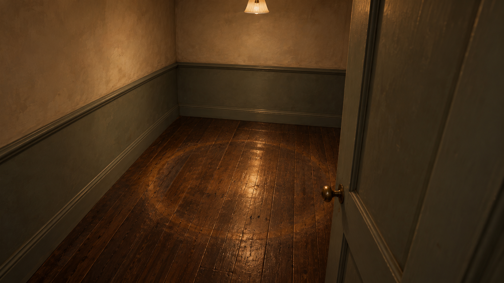
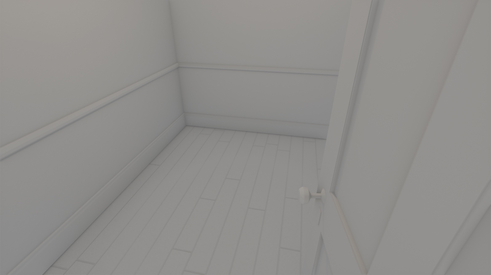
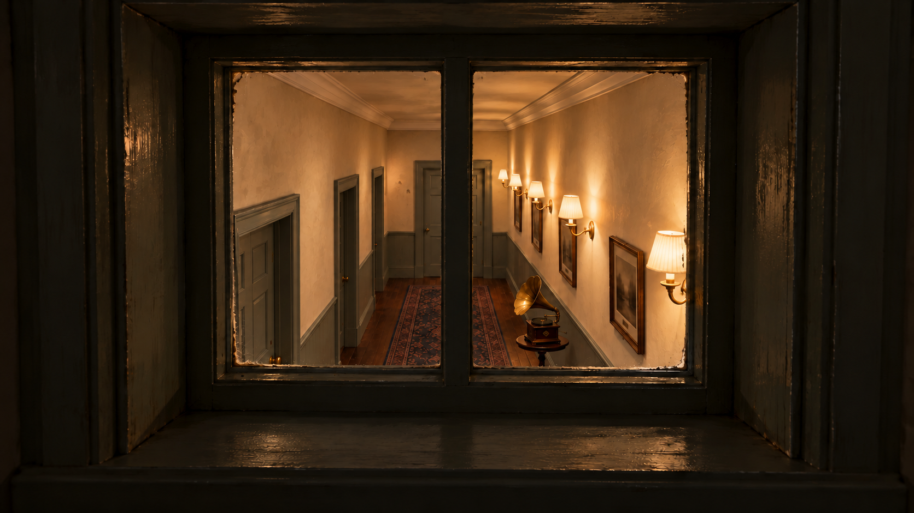
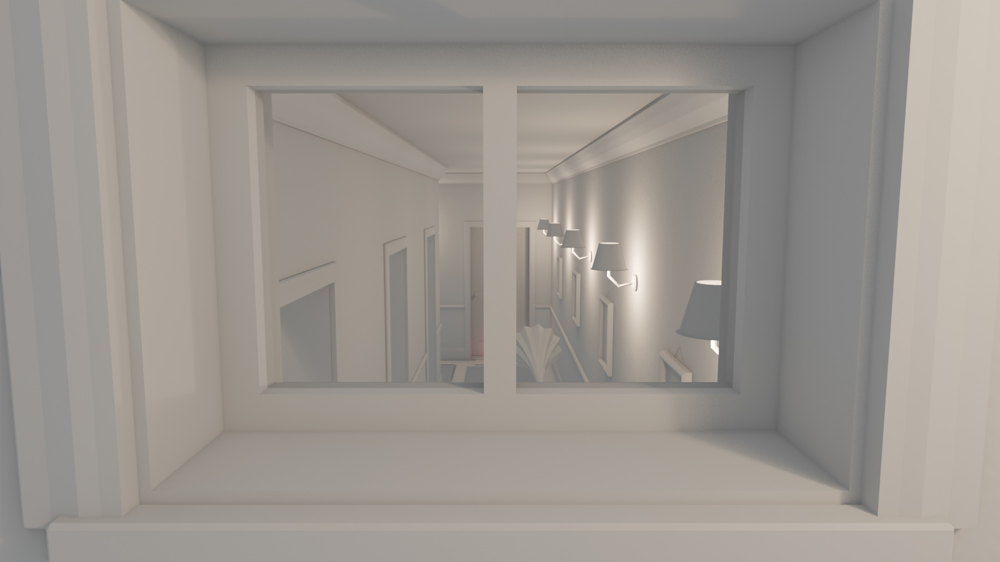
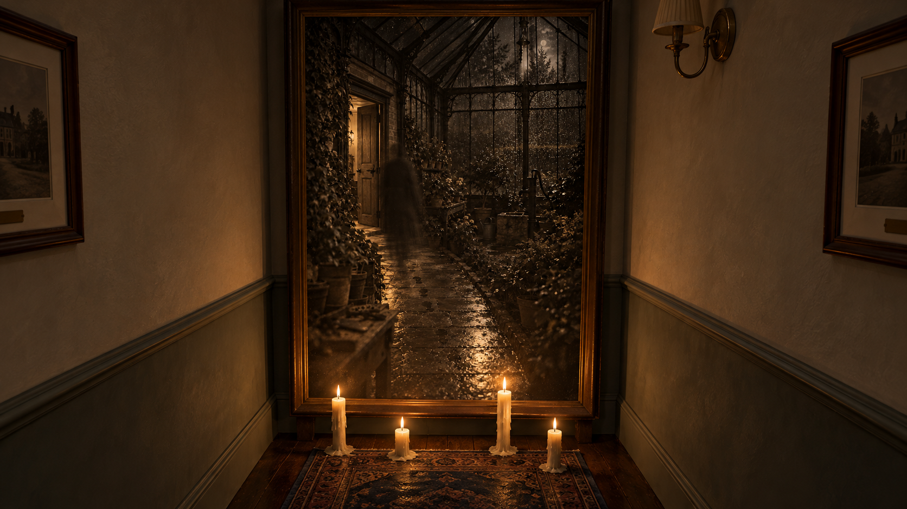
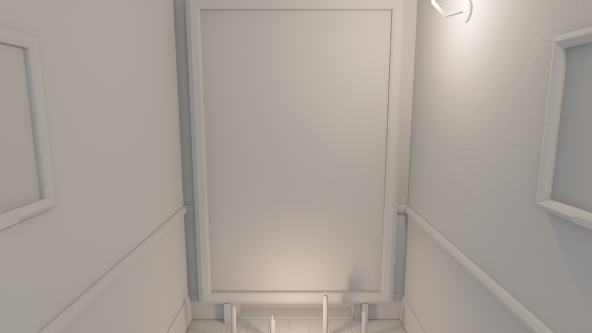
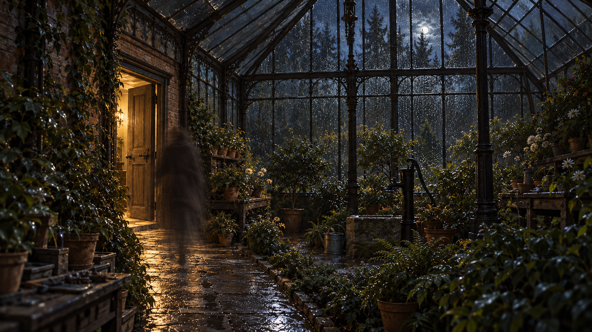

01 起点走廊 待审候选
初稿照片误画风景；r1 改为家庭合影，但各幅完全一致、横幅照片规格仍未满足。门把手存在重复；需逐点对照白模。
原生 1672 × 941 · 导出同原图 · 未放大 · corridor_layer1-v2-r1.png
02 暗房门 待审候选
r1 已压暗壁灯并换家庭照；门缝红光更突出，但灯罩仍偏亮，“红光最亮”待进一步修订与亮度复核。家庭照与其余图尚未统一。
原生 1672 × 941 · 导出同原图 · 未放大 · corridor_darkroom-v2-r1.png
03 转角回望 待审候选
r1 改家庭照，却额外新增最前方相框，违反保留底图位置要求；仅保留修订供比较，不作为选定稿。
原生 1672 × 941 · 导出同原图 · 未放大 · corridor_turn-v2.png
04 第二段 待审候选
两侧相框、右墙三灯与门下暖光可见；照片人物排列与其他图不一致，门板及物件位置需叠图复核。
原生 1672 × 941 · 导出同原图 · 未放大 · corridor_segB-v2.png
05 衣帽间 待审候选
可数出四钩、三衣，第3钩空、下有水迹，左凳右门；吊灯暖光。关键叙事细节初检可见，非尺寸/机位验收。
原生 1672 × 941 · 导出同原图 · 未放大 · corridor_cloakroom-v2.png
06 空房间 待审候选
无家具，地板有磨亮圆圈，单吊灯；圆圈尺度与照度需人工确认。


原生 1672 × 941 · 导出同原图 · 未放大 · corridor_emptyroom-v2.png
07 楼梯小窗 待审候选
r1 去掉左墙多余相框并改回圆几；右墙照片仍偏风景，壁灯数量与底图/任务卡需复核；远门被窗中梃遮挡。


原生 1672 × 941 · 导出同原图 · 未放大 · corridor_stair_window-v2-r1.png
08 照片墙 待审候选
门高照片、四支蜡烛、框内左开门与黑影均可见；两侧仍偏亮，是否仅烛光与底图位置需复核。侧框还是风景内容。


原生 1672 × 941 · 导出同原图 · 未放大 · corridor_photo_wall-v2.png
09 走进照片 待审候选
左侧开门暖光、玻璃铁架、盆栽、湿石板和半透明背影可见；原参考为竖图，本图横向扩展了视野，非严格同画幅。温室整体亮度待审。


原生 1672 × 941 · 导出同原图 · 未放大 · corridor_greenhouse_path-v2.png